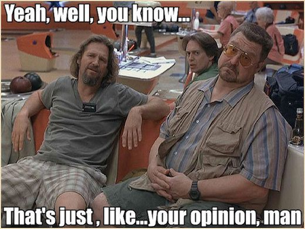

Things can be free, as in beer[1], as in costs no money. Or things can be free, as in speech, as in do whatever you want just leave me out of it. Linux is the shining example of both.
Linux (or GNU/Linux) is a free and open-source operating system that I started using around 2018. Actually, my first encounter was in 2016, but I was a mere philistine who couldn't comprehend its relevance. Not coincidentally, re-introduction corresponded with my joining a high-powered development team. Embracing Linux (and open-source software in general) revealed a new perspective on what was possible on computers.
However, there is some good news and some bad news. Such is life.
There is an old adage:
Linux is only free if your time has no value.[2]
I.e., prepare yourself for a time-sink.
I believe most Linux users would concede this point.[3] The learning curve is real, it can be steep, and only the committed among us survive the journey to reap the reward.
While we're at it, let's gripe a bit:
🍇 Terminals are scary (at first)[4]
🍇 Hardware support not guaranteed *cough* GPUs & Bluetooth
🍇 Foot-guns are a thing
What's a foot-gun you ask. Let me demonstrate.
Ever heard of harfbuzz? Me neither until I thought ligatures were a real terminal necessity. Don't know what ligatures are? Maybe your better off not knowing.[5] Gross over simplification - harfbuzz is a library needed for ligatures. No problem - there's a build section in the library docs, and after my first meson build I have my ligatures!
I'm pretty pleased until some time later upon realizing that several other programs depend on this library and are now failing. One solution proposed on Arch Wiki was to set the LD_PRELOAD environment variable to help each program find its preferred library. Kind of a hack-y band aid, but it got me unstuck and working again. "Flipping" this additional switch was fine until I ran across programs that failed no matter which way the switch was flipped. Finally, I was forced to confront the real problem.
The solution - do another meson build with an additional flag that was needed for my particular system and which was not well documented. This was painful. When you're navigating uncharted waters, it's unclear where the danger will be lurking. However, that does NOT mean that you should be scared to explore. This bout frustrated me at times, but I learned about harfbuzz and why programs like Libre Office and Pandoc rely on it.
Anyone who gets started with Linux will find their own unique Harfbuzz Hell because each user will customize their machine to their liking for their functions. So best advise is embrace it and look for the learning opportunities. They are plentiful.
Congratulations for making it to the good news (we're almost done here). In keeping with the theme, here is another obscure quote.
To live only for some future goal is shallow. It's the sides of the mountain which sustain life, not the top. Here's where things grow.[6]
Diving into the unknown and keeping an open mind will reveal many treasures among the growing pains. There is a lot to explore. So many brilliant people have worked hard on open-source projects and selflessly shared the end product. There's really no need to pay for an operating system or any software if you don't want to. A little exploration will prove this, and those things which seemed scary will turn out to be over-sized teddy bears.
There's too many to count, but here are some things I appreciate:
💙 Terminals ⇒ beautifully simple command line tools[7]
💙 Open-source ⇒ constant innovations
💙 Shell ⇒ script automate everything
💙 Options ⇒ for those who want better
💙 Freedom (as in speech) ⇒ customize everything[8]
Every person has different need, use-case, aesthetic, etc. It follows that every person has a different perfect computer setup. Just like how the world is not black and white, not everyone can be fully described in one of two buckets.[9]
There is a richness in diversity in Linux. Users have a choice of distribution suited for particular purposes and tastes (maybe too many choices so just pick Ubuntu to start then hop to your desire). Users have a choice of desktop environment that will help them fine tune the look and feel that works best for them. Finally, users have full control of their systems. Users can do anything and are only limited by the time they choose invest.

Good software exists. Some of it's free-as-in-beer, some of it's free-as-in-speech. There's many cases of both throughout Linux and the wider Open-source community. Best part - it's for everybody!
Remember, you are not alone. There is a strong community of Linux enthusiasts in the world who are willing and able to help you get started. Anyone can do this and there is nothing to lose.
Linux (and Open-source software in general) is a bountiful garden. Dig it.
Share this with a curious soul or anyone asking about Linux.
| [1] | Gratis versus libre |
| [2] | Jamie Zawinski |
| [3] | See the Good News |
| [4] | You learn to love them. As I write this there are 8 on my system. |
| [5] | Just kidding, they're awesome ⇒ ⇗ ⇑ ⇖ ⇐ ⇙ ⇓ ⇘ ⇒ α ≥ β ≤ γ ≠ δ ⬖ |
| [6] | From Zen and the Art of Motorcycle Maintenance |
| [7] | awesome-cli-apps |
| [8] | Desktop Environments |
| [9] | Global Desktop Operating System Market Share |